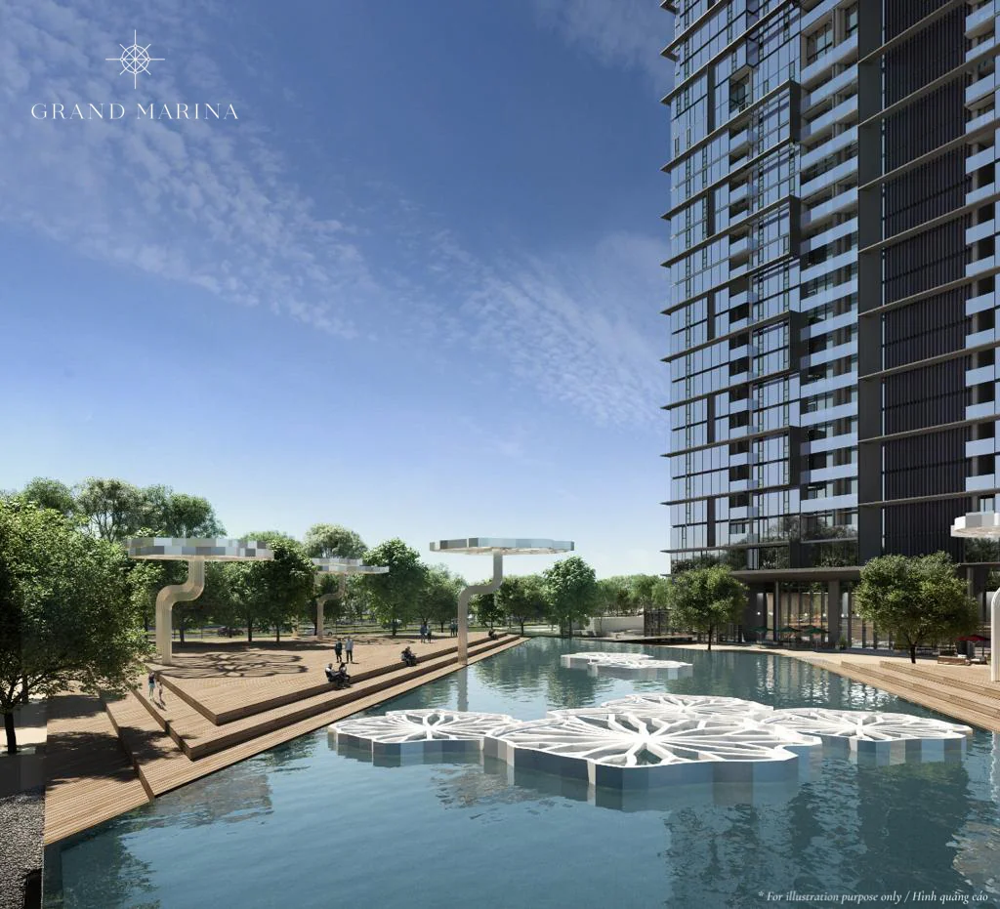

Grand Marina Saigon được giới thiệu là dự án căn hộ hàng hiệu Marriott & JW Marriott Branded Residences đầu tiên tại Việt Nam, do Masterise Homes phát triển và Marriott International vận hành dịch vụ. Một điểm khiến nhiều người mua băn khoăn: dự án dùng tới hai thương hiệu khác nhau — Marriott cho tháp Lake, và JW Marriott cho các tháp Lagoon, Cove, Sea. Vậy hai cái tên này khác nhau ở đâu, và nó ảnh hưởng gì đến căn hộ bạn chọn? Bài viết này giải thích rõ ràng, bằng tiếng Việt dễ hiểu.
Marriott và JW Marriott khác nhau ở điểm gì?
JW Marriott là thương hiệu cao cấp hơn (luxury) trong hệ thống Marriott International, còn Marriott là thương hiệu khách sạn 5 sao "premium" cốt lõi — cả hai đều thuộc cùng một tập đoàn nhưng định vị ở hai thứ hạng khác nhau.
Marriott International là tập đoàn khách sạn lớn nhất thế giới với hơn 30 thương hiệu, được xếp thành nhiều nhóm theo đẳng cấp. Trong đó, "JW" trong JW Marriott là tên viết tắt của J. Willard Marriott — nhà sáng lập tập đoàn — và dòng này được đặt ở nhóm Luxury, cùng nhóm với những cái tên như Ritz-Carlton hay St. Regis. Thương hiệu Marriott (Marriott Hotels) nằm ở nhóm Premium: vẫn là khách sạn 5 sao đầy đủ tiện nghi, nhưng định vị ngay dưới dòng Luxury.
Nói ngắn gọn: cả hai đều sang trọng và do cùng Marriott International vận hành, nhưng JW Marriott được xem là bậc cao hơn về định vị thương hiệu và trải nghiệm dịch vụ.
Tháp nào ở Grand Marina mang thương hiệu nào?
Tháp Lake mang thương hiệu Marriott, còn ba tháp Lagoon, Cove và Sea mang thương hiệu JW Marriott.
- Mốc bàn giao và tình trạng sử dụng cần xác nhận theo hồ sơ của đúng tháp và căn hộ.
- Mốc bàn giao và tình trạng sử dụng cần xác nhận theo hồ sơ của đúng tháp và căn hộ.
- Mốc bàn giao và tình trạng sử dụng cần xác nhận theo hồ sơ của đúng tháp và căn hộ.
- Cần xác nhận theo hồ sơ của tháp và căn cụ thể
Như vậy, nếu bạn muốn một căn hộ gắn thương hiệu JW Marriott thì sẽ chọn trong nhóm Lagoon, Cove hoặc Sea; còn Lake là lựa chọn mang thương hiệu Marriott. Mốc bàn giao và tình trạng sử dụng cần xác nhận theo hồ sơ của đúng tháp và căn hộ. Bạn có thể xem thêm Giới thiệu dự án để nắm tổng quan về Masterise Homes và đối tác Marriott.

Thứ hạng thương hiệu trong hệ thống Marriott International
Marriott International chia các thương hiệu thành nhiều nhóm; JW Marriott thuộc nhóm Luxury, còn Marriott thuộc nhóm Premium ngay dưới đó.
Để dễ hình dung vị trí của hai thương hiệu xuất hiện tại Grand Marina trong "bản đồ" thương hiệu của tập đoàn, có thể tham khảo bảng dưới đây (mang tính minh họa về định vị, không phải xếp hạng chính thức của dự án):
| Nhóm định vị | Một số thương hiệu tiêu biểu | Có tại Grand Marina? |
|---|---|---|
| Luxury (cao cấp nhất) | Ritz-Carlton, St. Regis, JW Marriott | Có — Lagoon, Cove, Sea |
| Premium | Marriott Hotels, Sheraton, Westin | Có — Lake |
| Select / Classic | Courtyard, Four Points, Fairfield | Không |
Điều quan trọng cần nhớ: dù là Marriott hay JW Marriott, cả hai tại Grand Marina đều được vận hành theo tiêu chuẩn dịch vụ của Marriott International và cùng dùng chung nhiều tiện ích, dịch vụ trong dự án. Sự khác biệt nằm chủ yếu ở định vị thương hiệu chứ không phải ở chất lượng "5 sao hay không".
Nếu bạn đang phân vân nên chọn tháp Marriott hay JW Marriott cho mục tiêu của mình, hãy nhắn vài câu hỏi cụ thể.
Sự khác biệt có ảnh hưởng đến dịch vụ và tiện ích không?
Trên thực tế, cư dân cả Marriott và JW Marriott tại Grand Marina đều được hưởng các dịch vụ do Marriott vận hành như concierge 24/7, lễ tân, an ninh nhiều lớp và quyền lợi Marriott Bonvoy.
Các dịch vụ và tiện ích mà cư dân được tiếp cận bao gồm:
- Concierge 24/7, dịch vụ phòng (room service từ bếp JW Marriott), dọn phòng và giặt ủi.
- An ninh nhiều lớp 24/7: CCTV, kiểm soát ra vào bằng thẻ và sinh trắc học, valet parking.
- Quyền lợi Marriott Bonvoy: ưu đãi tại hơn 8.000 khách sạn Marriott, tích điểm, nâng hạng phòng, quyền truy cập Vacation Club.
- Tiện ích chung như Sky Infinity Pool hướng sông, Technogym, spa & wellness, Sky Lounge & Library, Cinema Room 4K, Kids Club, Yacht Club access.
Vì vậy, việc chọn Lake (Marriott) hay Lagoon/Cove/Sea (JW Marriott) thường được quyết định dựa trên loại căn hộ, hướng nhìn, giai đoạn bàn giao và mức giá phù hợp, hơn là lo ngại về "đẳng cấp dịch vụ" giữa hai thương hiệu. Lưu ý rằng hợp đồng vận hành với Marriott có thời hạn — bạn có thể đọc thêm Hợp đồng Marriott 20 năm: Hết hạn thì sao? Phí quản lý? để hiểu cơ chế phí quản lý và gia hạn.

Thương hiệu Marriott hay JW Marriott có ảnh hưởng đến giá và giá trị không?
Căn hộ hàng hiệu (branded residences) thường được định giá cao hơn căn hộ thường tương đương; theo Knight Frank và Savills, mức chênh phổ biến khoảng 25–35% — nhưng đây là tham chiếu thị trường, không phải cam kết tăng giá.
Tại Grand Marina, mức giá tham khảo (có thể thay đổi theo từng giai đoạn bán hàng) như sau:
| Loại căn | Diện tích tham khảo | Giá tham khảo (từ) |
|---|---|---|
| 1 phòng ngủ (1BR) | ~50–60 m² | từ ~20 tỷ |
| 2 phòng ngủ (2BR) | ~70–90 m² | từ ~35 tỷ |
| 3 phòng ngủ (3BR) | ~110–140 m² | từ ~60 tỷ |
| Sky Villa / Duplex | ~180–250 m² | từ ~100 tỷ |
Giữa hai thương hiệu, không có một "công thức" cứng rằng JW Marriott luôn đắt hơn Marriott — giá cụ thể của từng căn phụ thuộc vào tháp, tầng, hướng nhìn, diện tích và giai đoạn mở bán. Branded residences nhìn chung được thị trường đánh giá nhờ thương hiệu vận hành và chuẩn dịch vụ, nhưng kết quả đầu tư thực tế còn tùy thuộc vào dự án, thời điểm và chính sách. Bạn có thể tìm hiểu kỹ hơn về khái niệm này qua bài Branded Residences là gì?
Người nước ngoài có mua được căn hộ Marriott / JW Marriott không?
Người nước ngoài được mua căn hộ tại Grand Marina với hình thức sở hữu 50 năm (gia hạn theo luật Việt Nam) và bị giới hạn tối đa 30% số căn trong mỗi tòa nhà, áp dụng cho cả tháp Marriott lẫn JW Marriott.
Một số điểm cần lưu ý cho người mua nước ngoài, áp dụng chung cho mọi tháp:
- Sở hữu 50 năm, được phép gia hạn theo quy định pháp luật Việt Nam; được chuyển nhượng và cho thuê.
- Giới hạn 30% số căn cho người nước ngoài trong mỗi tòa — nên một số tháp hoặc loại căn có thể đã hết "room" ngoại.
- Hỗ trợ hồ sơ, dịch thuật song ngữ trong quá trình giao dịch.
Vì hạn mức 30% áp dụng theo từng tòa, việc còn căn cho người nước ngoài ở tháp Marriott (Lake) hay JW Marriott (Lagoon/Cove/Sea) sẽ thay đổi theo thực tế từng thời điểm. Trước khi quyết định, bạn nên kiểm tra tình trạng pháp lý và tiến độ bàn giao — tham khảo Pháp lý & tiến độ bàn giao Grand Marina đã xong chưa? để cập nhật mới nhất.
Muốn biết tháp Marriott hay JW Marriott nào còn căn dành cho người nước ngoài ngay lúc này?
Tóm tắt: nên hiểu gì về Marriott vs JW Marriott khi chọn căn?
Hãy xem thương hiệu (Marriott cho Lake, JW Marriott cho Lagoon/Cove/Sea) là một yếu tố định vị, còn quyết định mua nên dựa trên loại căn, hướng nhìn, ngân sách và mục tiêu sử dụng của bạn.
Cả Marriott và JW Marriott tại Grand Marina đều thuộc cùng Marriott International, cùng chuẩn dịch vụ 5 sao và chia sẻ phần lớn tiện ích trong dự án; JW Marriott đứng ở nhóm định vị cao hơn (Luxury) so với Marriott (Premium). Trong thực tế lựa chọn, sự khác biệt thương hiệu thường ít quan trọng hơn các yếu tố như diện tích, tầng, view sông hay view thành phố, và mức giá phù hợp túi tiền. Mọi thông tin về giá, diện tích, số căn và tiến độ trong bài chỉ mang tính tham khảo và có thể thay đổi theo công bố chính thức của chủ đầu tư.
Ghi chú
Thông tin về giá, diện tích và tiến độ có thể thay đổi theo công bố chính thức từ chủ đầu tư. Vui lòng liên hệ Zalo 0903 475 802 để nhận tài liệu và bảng giá mới nhất.